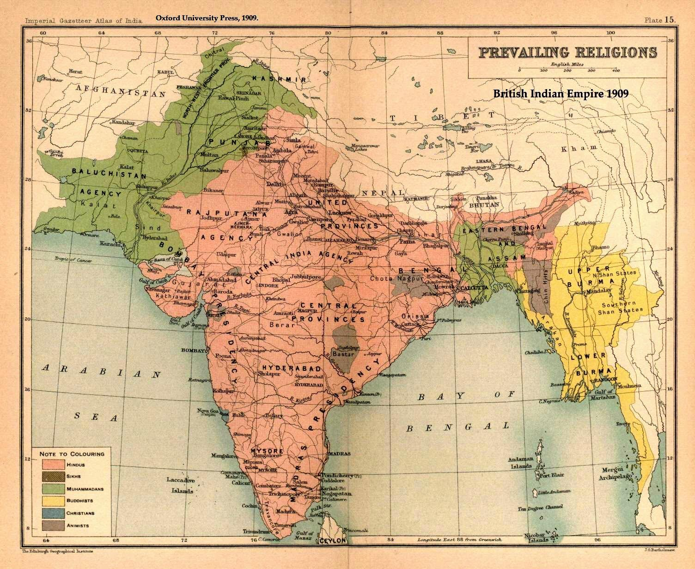

History

600 - 1971
Civilisational history of Bangladesh dates back over four millennia, to the Chalcolithic. The country's early documented history featured successions of Hindu and Buddhist kingdoms and empires, vying for regional dominance.
Islam arrived during the 6th-7th century AD and became dominant gradually since the early 13th century with the conquests led by Bakhtiyar Khalji as well as activities of Sunni missionaries such as Shah Jalal in the region. Later, Muslim rulers initiated the preaching of Islam by building mosques. From the 14th century onward, it was ruled by the Bengal Sultanate, founded by king Shamsuddin Ilyas Shah, beginning a period of the country's economic prosperity and military dominance over the regional empires, which was referred by the Europeans as the richest country to trade with.[1] Afterwards, the region came under the Mughal Empire, as its wealthiest province. Bengal Subah generated almost half of the empire's GDP and 12% of the world's GDP,[2][3][4] larger than the entirety of western Europe, ushering in the period of proto-industrialization.[5] The population of the capital city, Dhaka, exceeded a million people.
Following the decline of the Mughal Empire in the early 1700s, Bengal became a semi-independent state under the Nawabs of Bengal, ultimately led by Siraj ud-Daulah. It was later conquered by the British East India Company at the Battle of Plassey in 1757. Bengal directly contributed to the Industrial Revolution in Britain but led to its deindustrialization.[6][7][8][9] The Bengal Presidency was later established.
The borders of modern Bangladesh were established with the separation of Bengal and India in August 1947, when the region became East Pakistan as a part of the newly formed State of Pakistan following the end of British rule in the region.[10] Proclamation of Bangladeshi Independence in March 1971 led to the nine-month long Bangladesh Liberation War, that culminated with East Pakistan emerging as the People's Republic of Bangladesh.
After independence, the new state endured famine, natural disasters, and widespread poverty, as well as political turmoil and military coups. The restoration of democracy in 1991 has been followed by relative calm and rapid economic progress.